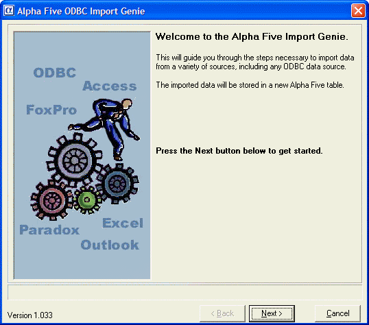
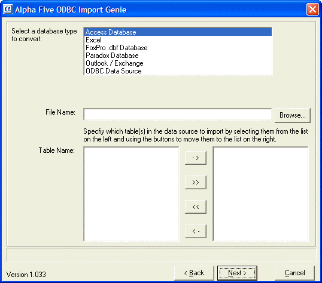
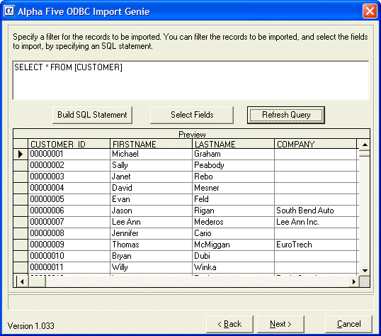

Importing Data Into Alpha Anywhere
Note: If you are using Web components or SQL APIs, you don't need to import SQL data into Alpha Anywhere at all: you can run SQL queries directly against the database.
There are several techniques for importing data into Alpha Anywhere.
- Attaching a .DBF table. Many other programs, including Microsoft Excel and Microsoft Access can save data in .DBF format. If data from a another program is available in .DBF format, you need only attach it as a new table. Field names are limited to a maximum length of 10 characters.
- Make sure that character field lengths in the source table are the same as the fields in the target table. Microsoft Access text fields are often 255 characters long.
- Importing data saved in one of the common Lotus 1-2-3, Microsoft Excel, or ASCII formats.
Using ODBC
ODBC (Open Database Connectivity) is a programming standard for accessing information from a variety of database systems. Alpha Anywhere lets you use ODBC to interact with other data sources.
Alpha Anywhere uses ODBC in two ways.
- Attach an SQL table to a Alpha Anywhere database, creating a Linking Table.
- Use the ODBC Import Genie to import data into an Alpha Anywhere table, letting you use the data in an Alpha Anywhere environment.
The Alpha Anywhere ODBC Import Genie lets you import ODBC data into an Alpha Anywhere table. Once imported, the table behaves like any other Alpha Anywhere table. Note that once the imported into Alpha Anywhere, any changes you make to the data is not reflected in the original source data.
To use the ODBC Import Genie :
- In the Control Panel, select File > Import > ODBC Import Genie.
- The Genie either opens, or you are prompted to install the ODBC Import Genie.
Installing the ODBC Import Genie
- If you are prompted to install the ODBC Import Genie, you can install it immediately by clicking the Install Now button.
- If you installed Alpha Anywhere from a CD, installation begins and asks you to insert your Alpha Anywhere CD.
- If you installed Alpha Anywhere from the Web, Alpha Anywhere opens your web browser and initiates the installer. You'll need an active Internet connection to do this.
- When the installation is complete, open the ODBC Import Genie again, and the Genie guides you through the import process.
- Click Next

The ODBC Import Genie lets you import data into Alpha Anywhere tables from the following sources:
- Microsoft Access
- Microsoft Foxpro (versions above 2.6 - you do no need to import Foxpro tables from v2.6 or earlier - just use them as is)
- Microsoft Excel
- Paradox
- Microsoft Outlook and Microsoft Exchange
- Any ODBC data source
|
- The first page of the Genie lets you select the type of data you want to import. Select a database type.
- Click Browse... to find the database you want to import.
- Specify which table(s) to import.
- Click Next.

- The next page of the Genie lets you enter any arbitrary SQL statement to select the data that you want to import. The statement can filter the table to be imported, or sub-select which fields you want to import.
- Optionally, preview which records will be imported by clicking the Refresh Query button.
- Click Next >.

- Optionally click the Show Xbasic button. This shows the Xbasic code that you can include in a script to automate the importing of data from any of the data sources that the ODBC Import Genie supports.
- Click Finish.